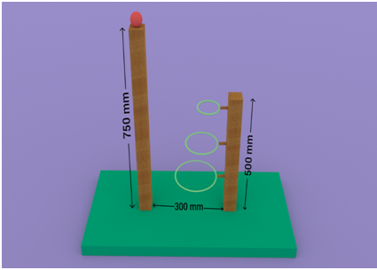

Walking on walls has always been fascinating. Calm down, there isn't any trespassing and stealing here. Destroy the walls of your thoughts to see your creation treading on the vertical. Race up with other bots and score the basket in the fastest time. Defy gravity; it pulls down all. Vertical is the new horizontal, the Escalades.
Problem Statement
Design a robot which climbs the pole and has a mechanism to hit the ball mounted on the top of the pole
Rules
-
Max team size: 4, single person entry is not allowed.
-
Robots must be manually controlled; autonomous bots will not be allowed.
-
Bots should not use more than 12V power supply and only one supply for whole system. You cannot use parallel batteries for generating higher power.
-
No physical intervention in the arena would be tolerated. This would lead to direct disqualification. You may call for a replay .
-
The pole climber will have to climb the pole and hit the ball placed at the top of the pole with arm of bot in such a way that It goes into the basket.
-
Bots should be controlled by designated controller/ manual switching and not by physical pushing or pulling.
-
Judge's decision at any point would be final.Organizers are bound to disqualify any team breaking the rules.
-
Dimensions of the bot should not exceed 250mm x 250mm x 250mm . Bot's arm will be included in the dimensions of the bot allowed.
-
Each participating team shall be allowed to participate with only one bot. And same bot (as used in first round) shall be used in consequent matches/rounds; no modification in bots shall be allowed after commencing of tournament.
-
Each team will be given 1 minute in which they have to score maximum point they can. If bot is not working properly or stops in middle, team can ask for a replay. Maximum 2 replays can be called by each team consecutively when their turn is going on. Once their turn gets over, they will not be allowed to replay. the teams will have to restart from the initial position after every attempt.
-
Scoring:
Upper Basket 50
Middle Basket 20
Lower Basket 10
-
Dimensions of baskets
Uppermost 100 mm
Middle 150 mm
Lower 200 mm
Arena

Tentative layout of the arrangement
Contact
Ayush Pranav
7289017595
Ashwani Kumar Chaurasia
9034092964